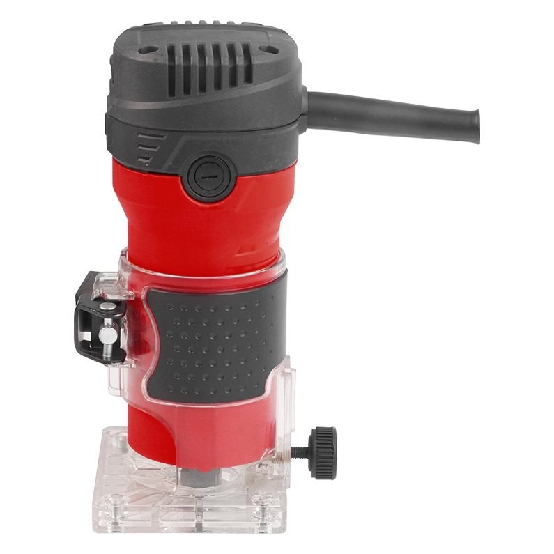

Start / Elektrowerkzeuge / Druckluft-Nagler 15–50 mm (Stauchkopf-/Stiftnagler, 6–8 bar)

Elektrowerkzeuge
Druckluft-Nagler 15–50 mm (Stauchkopf-/Stiftnagler, 6–8 bar)
Druckluft-Nagler für Schalung, Holzbau, Dachlattung und Innenausbau – hohe Setzleistung bei geringer Ermüdung.
Der Druckluft-Nagler beschleunigt Schalungs-, Zimmer- und Ausbauarbeiten gegenüber dem Handnageln erheblich und setzt Nägel gleichmäßig tief bei geringer Belastung für den Anwender. Professionelle Anwender erwarten ein leichtes Aluminium-/Magnesium-Gehäuse, eine einstellbare Eintreibtiefe, eine Sicherheitsauslösung (Einzel- und Kontaktauslösung nur mit Sicherung), eine Schnellkupplung nach europäischem Standard und eine Abluftführung weg vom Bediener.
Technische Daten
| Betriebsdruck | 6–8 bar |
|---|---|
| Nagellänge | 15–50 mm |
| Magazin | Stangen-Magazin, ca.; 100 Nägel |
| Eintreibtiefe | werkzeuglos einstellbar |
| Auslösung | Einzel-/Kontaktauslösung mit Sicherung |
| Gehäuse | Aluminium/Magnesium, Gewicht ca.; 1,3–2,5 kg |
| Zolltarifnummer (HS) | 84671900 |
EU-Normen und Vorschriften
2006/42/EGMaschinenrichtlinie (ab 20.01.2027 Maschinenverordnung (EU) 2023/1230)EN ISO 11148-13Handgehaltene nichtelektrische Maschinen – Sicherheitsanforderungen – Teil 13: EintreibgeräteEN ISO 15744Handgehaltene nichtelektrische Maschinen – GeräuschmessverfahrenEN ISO 28927-13Handgehaltene Maschinen – Messung der Schwingungsemission – Teil 13: EintreibgeräteProdSG § 20GS-Zeichen Geprüfte Sicherheit (freiwillig, empfohlen für Profi-Ausschreibungen)
Passt dazu
Weitere Produkte dieser Kategorie
Bohrhammer SDS-plus 26 mm, 800 W (netzbetrieben)
Akku-Bohrschrauber 18 V, bürstenlos (2-Gang)
Winkelschleifer 125 mm, 1.200 W (netzbetrieben)
Winkelschleifer 230 mm, 2.400 W (netzbetrieben)
Säbelsäge 1.200 W (netzbetrieben)Kräftige Säbelsäge für den Rückbau: Holzbalken, Rohre, Profile und Nägel in einem Schnitt.
Handkreissäge 185 mm, 1.400 W (netzbetrieben)
Langhalsschleifer (Wand- und Deckenschleifer) 750 W, Ø 225 mmSchleifgiraffe zum staubarmen Schleifen von Spachtel, Putz und Trockenbau an Wänden und Decken ohne Gerüst.
Exzenterschleifer Ø 125 mm, ca. 300 W (netzbetrieben)Exzenterschleifer mit Staubabsaugung für feines, schleifspurfreies Schleifen von Holz, Spachtel, Lack und Putz.
Bolzensetzgerät (Nagelschussgerät), gasbetätigt, Akku-ZündungGasbetätigtes Bolzensetzgerät zum schnellen Befestigen von Halterungen, Trassen und Unterkonstruktionen auf Beton und Stahl.
Bausauger Staubklasse M, 30 l, 1.200 W (Sicherheitssauger)Sicherheitssauger der Staubklasse M (EN 60335-2-69) mit Geräte-Steckdose für Bohren, Schleifen und Entkernen – geeignet für mineralischen Staub nach TRGS 559.
Nass-/Trockensauger 30 l, 1.400 W (Bausauger, Edelstahlbehälter)
Klett-Schleifscheiben Ø 125 mm, 8-Loch, Sortiment 50 Stück (K40–K180, Aluminiumoxid)50 Klett-Schleifscheiben Ø 125 mm mit 8-Loch-Absaugung im Körnungsmix von grob bis fein – das Verbrauchsmaterial zum Exzenterschleifer.
SDS-plus Bohrer- und Meißel-Set 12-teilig im Koffer (Hartmetall-Hammerbohrer, Spitz-/Flach-/Nutenmeißel)Neun SDS-plus-Hammerbohrer (5–20 mm) und drei Meißel im Kunststoffkoffer – das Standard-Zubehör zu jedem Bohr- und Kombihammer.
Säbelsägeblatt-Set 20-teilig (Bimetall, Holz und Metall, in Kunststoffbox)20 Bimetall-Säbelsägeblätter mit Universalschaft für Holz, Nägel und Metall in der Kunststoffbox – das Verschleißteil zur Säbelsäge.
Vlies-Filterbeutel 30 l, Staubklasse M (5er-Pack, für Bau- und Nass-/Trockensauger)
Meißelhammer SDS-plus, leicht (ca. 3 kg)Leichter, netzbetriebener Meißelhammer mit SDS-plus-Aufnahme für Fliesen, Putz, Schlitze und leichte Abbrucharbeiten – ohne Bohrfunktion.
Akku-Stemmhammer SDS-max (36–40 V, ca. 6 kg)
Absaug-Set für Stemm- und Meißelarbeiten
Schlagbohrmaschine 810 W (230 V), 13-mm-Bohrfutter, NetzbetriebNetz-Schlagbohrmaschine mit Kugelschlagwerk, stufenloser Drehzahlregelung und Rechts-/Linkslauf.
Oszillierendes Multifunktionswerkzeug 300 W (netzbetrieben)Schneiden, Schleifen und Schaben mit Schnellwechselsystem.
Stichsäge 650 W, 65 mm Schnitttiefe (netzbetrieben)Pendelhub-Stichsäge für Holz und Metall mit Schnellwechsel.
Handrührwerk 1.600 W, Doppelrührer (Mörtel, Farbe, Putz)Stufenlos regelbares Rührwerk für Mörtel, Farbe und Spachtel.
Heißluftgebläse 2.000 W, zweistufigHeißluftgebläse für Farbentfernung, Schrumpfschlauch und Kunststoff.

Akku-Schlagschrauber 1/2" 18 V, bürstenlosBürstenloser Schlagschrauber für Rad- und Schraubenmontage.

Oberfräse 600 W, 1/4"-Spannzange (netzbetrieben)Handoberfräse zum Kantenprofilieren und Nuten.
Doppelschleifer 150 mm, 350 W (Tischschleifer)Tischschleifer zum Schärfen und Entgraten.
Kantenfräse (Trimmer) 550 W, 6-mm-SpannzangeKompakte Kantenfräse für Laminat und Umleimer.